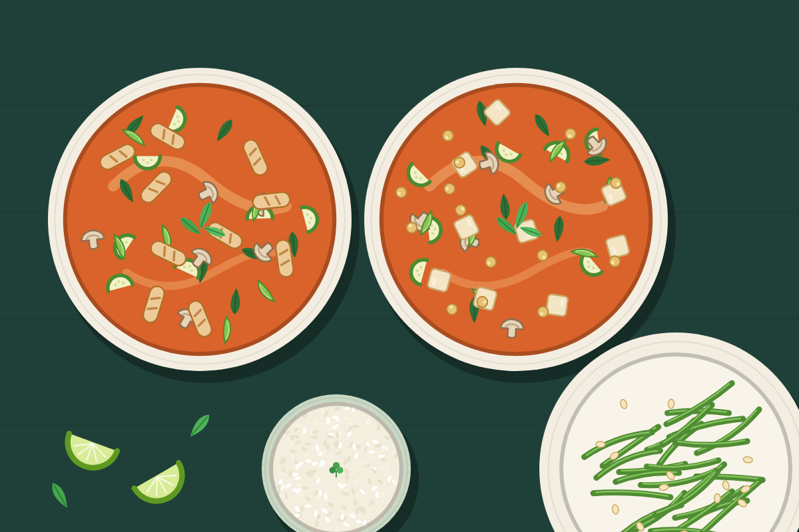

Thai Red Curry (Chicken and Tofu)
One coconut curry sauce split into two pots: chicken in one, tofu and chickpeas in the other. Dairy-free, no peppers, with garlicky roasted green beans.

Serves 4 servings
Prep
Cook
Total
Ingredients
Sauce, for both pots
- 1 tbsp oil
- 1 small onion, sliced
- 3 cloves garlic, minced
- 1 tbsp grated ginger
- 3 tbsp red curry paste
- 2 cans (13.5 oz) coconut milk
- 1 cup vegetable broth
- 1 tbsp soy sauce
Vegetables, for both pots
- 2 zucchini, cut in half-moons
- 8 oz mushrooms, sliced
- 2 cups snap peas or broccoli florets
- 5 oz baby spinach
- 1 lime
- fresh basil or cilantro
Meat pot
- 1 lb chicken breast or thigh, thinly sliced
- 2 tsp fish sauce
Vegetarian pot
- 1 block (14 to 16 oz) extra-firm tofu, cubed
- 1 can (15 oz) chickpeas, drained
Green beans
- 1 lb green beans
- 1 tbsp oil
- 3 cloves garlic, sliced
- salt
Steps
- Heat the oven to 425°F. Toss the green beans with oil and salt on a sheet pan.
- In a large pot, sauté the onion in oil for 3 minutes. Add the minced garlic, ginger, and curry paste and stir for 1 minute.
- Add the coconut milk, broth, and soy sauce. Bring to a simmer, then pour half into a second pot.
- Add the chicken to one pot and the tofu and chickpeas to the other. Simmer both for 8 minutes.
- Roast the green beans for 12 to 15 minutes, adding the sliced garlic for the last 5.
- Divide the zucchini, mushrooms, and snap peas between the pots. Simmer 5 to 6 minutes, until the chicken is cooked through.
- Stir in the spinach and lime juice. Add fish sauce to the chicken pot only, and a little extra soy sauce to the other if it needs salt.
- Serve as is, or over cauliflower rice or a small scoop of brown rice.
Check the curry paste label: some brands contain shrimp paste. Thai Kitchen does not.